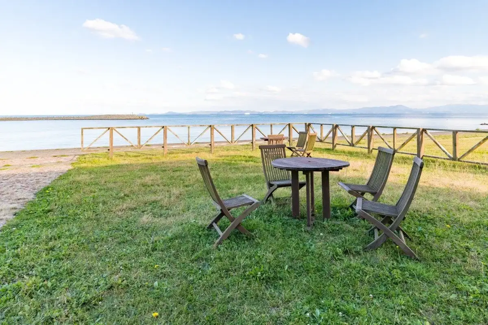
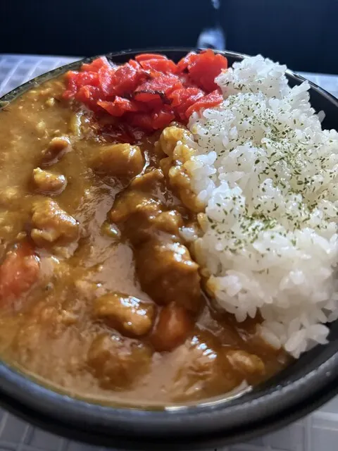
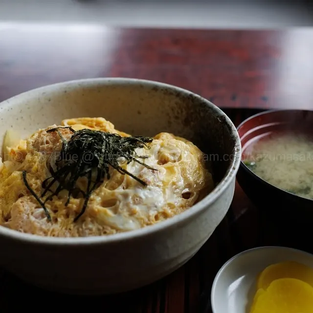
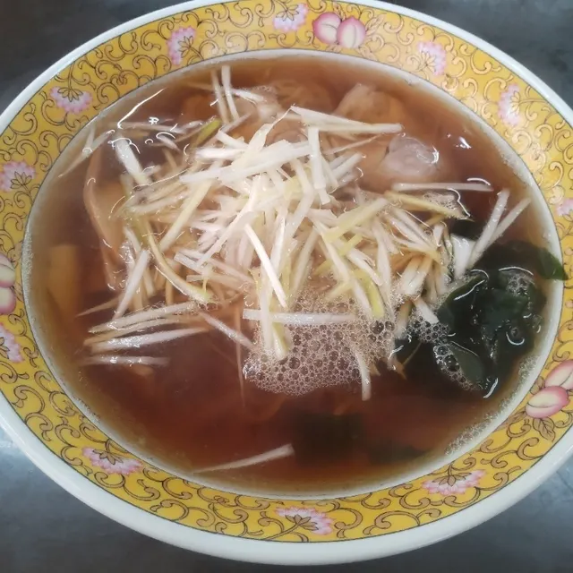
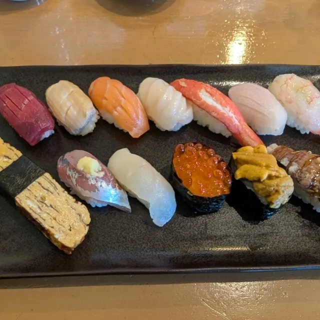
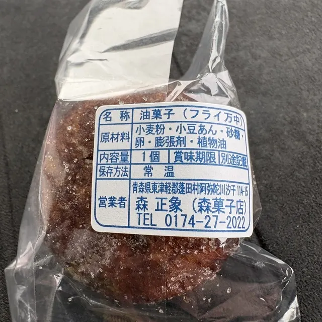
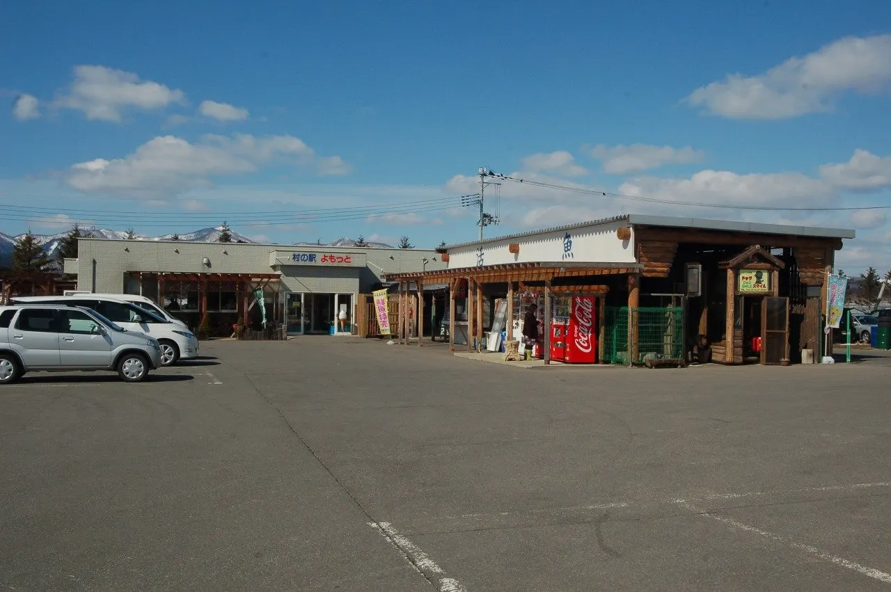
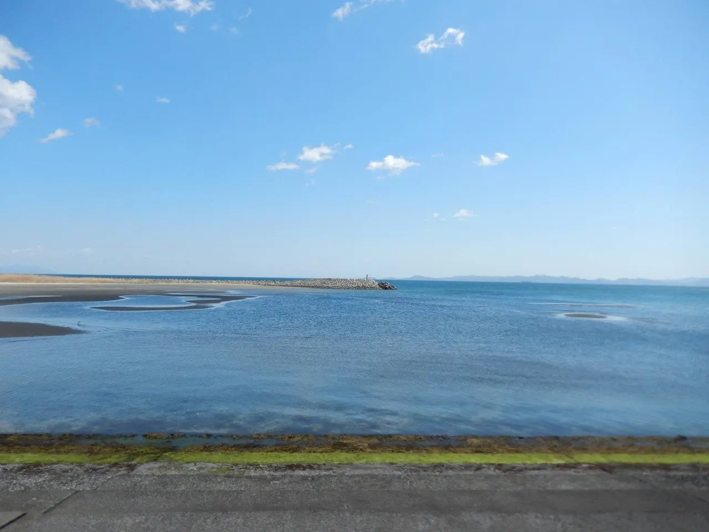
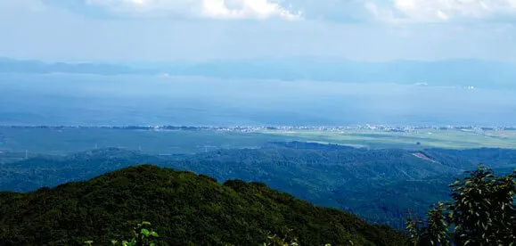

Yomogita
Yomogita · Aomori
Yomogita
Highlighted on the Aomori map.

Stay
No bookable places to stay found in Yomogita — nearest options in Aomori.
Dining
やどかり

Yadokari
マルシェよもぎた

Marushie Yomogita
玉松観光食堂

Tamamatsu Kankou Shokudou
傘松家仕出し店
Kasamatsu Ie Shidashi Mise
喜久酔
Yoshihisa Sui
とり清
Tori Kiyoshi
村の駅 よもっと

Mura No Eki Yomotto
和楽寿し

Wagaku Hisashi Shi
森菓子店

Mori Kashi Mise
Sights
Marche Yomogita
Farm market next to Tamamatsu Beach selling morning-picked vegetables.
Mura no Eki Yomotto

Roadside market on Route 280 known for freshly landed seafood.
Fureai Center Yomogi Onsen
Village hot spring opened in 1992 and renovated in 2017.
Tamamatsu Beach

Clear, shallow and calm swimming beach on Route 280.
Mt. Okura and Mt. Akakura Hiking

Hiking on 677 m Mt. Okura, a sacred peak, and 563 m Mt. Akakura in the Nakayama Range.
Tamamatsu Ocean Information Center
Small center at Tamamatsu Beach explaining the coast and its breakwaters.
Yomogita Castle Site
Site of a Nanboku-cho era stronghold, now Yomogita Hachimangu shrine in dense forest.
Tamamatsudai and Kojo-no-numa Pond
1.88-hectare pine park named for a ring-branched pine over 300 years old.